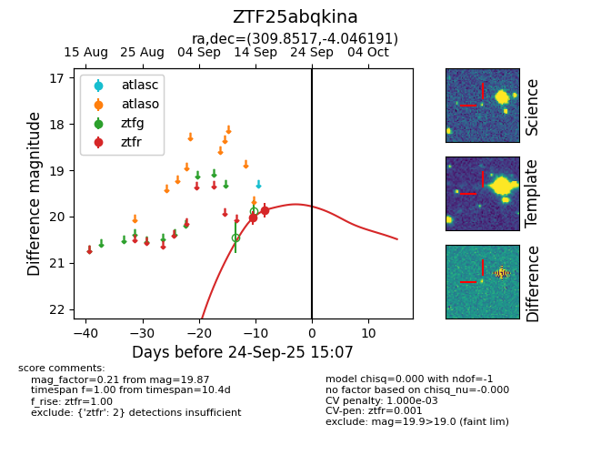
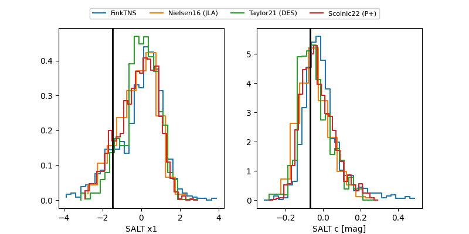

FINK: ZTF25abqkina
Lasair: ZTF25abqkina
ALeRCE: ZTF25abqkina
ZTF25abqkina (ztf,fink)
equatorial (ra, dec) = (309.8517,-4.04619)
galactic (l, b) = (42.1119,-25.79207)


last ztfr=19.87
2 ztfr detections